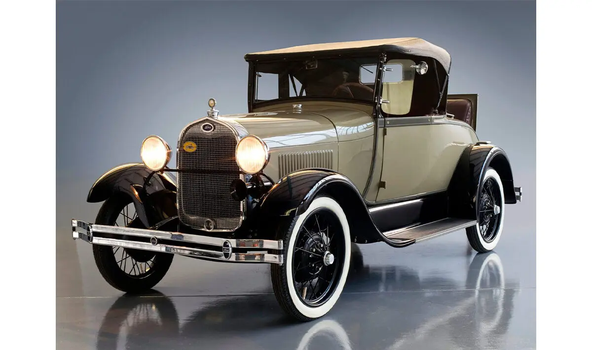

A car, also called an automobile, is a motor vehicle with wheels that runs primarily on roads, typically seating 1–8 people and mainly transporting passengers rather than cargo .Modern cars are complex systems with thousands of components, including engines, transmissions, safety systems, and electronic controls Encyclopedia Britannica Encyclopedia Britannica .They provide convenience, comfort, and efficiency in daily transportation Mech Content Mech Content .
The first steam-powered road vehicle was built in 1769 by French inventor Nicolas-Joseph Cugnot . The first internal combustion-powered automobile was designed in 1808 by Swiss inventor François Isaac de Rivaz . The modern car, suitable for everyday use, was invented in 1886 by German inventor Carl Benz with the Benz Patent-Motorwagen . Mass production began with the 1901 Oldsmobile Curved Dash and the 1908 Ford Model T, making cars affordable and widely available . Over time, cars replaced horse-drawn carriages in the US and became increasingly popular worldwide, especially after World War II .
Modern cars incorporate advanced technologies such as electronic computers, high-strength plastics, and new alloys . Safety and emission-control regulations have driven innovations like airbags, catalytic converters, and fuel-efficient engines. Electric and hybrid vehicles are increasingly common, reflecting the shift toward sustainable transportation .